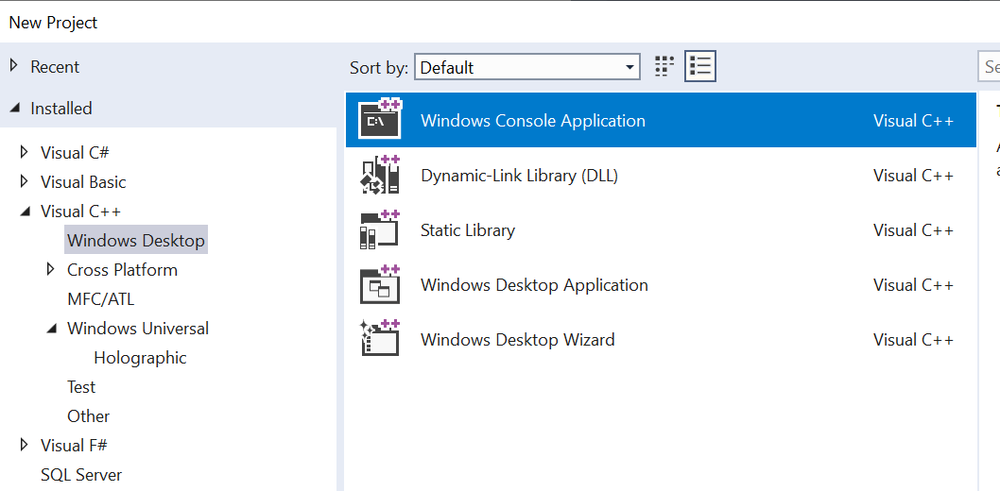
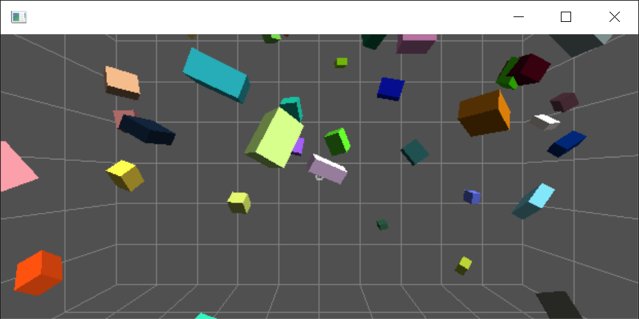

Hosting HoloJs in a Win32 C++ application
After following the steps outlined bellow, you will have a Win32 application that is executing a 3D application written in JavaScript and WebGL.Requirements:
- Visual Studio 2017 with C++ development components installed
- Visual Studio Code for debugging your JavaScript
Steps:
- In Visual Studio, create a new C++ console application:
 - Add the HoloJs Nuget package. Since its a pre-release package, make sure to check the "Include
prerelease" checkbox when searching.

-
In the source file that contains your main function, add these headers:
#include "holojs/holojs.h"
#include <memory>
#include <Windows.h>
using namespace std;
using namespace HoloJs;
-
Replace the main function body with these lines:
// Instantiate the HoloJs object
shared_ptr<IHoloJsScriptHost> scriptHost(CreateHoloJsScriptHost(), &DeleteHoloJsScriptHost);
// Create a default configuration
auto configuration = HoloJs::ViewConfiguration();
scriptHost->initialize(configuration);
// Run the app; this method returns when the user closes the window on desktop or
// switches away from the app on VR and HoloLens.
scriptHost->startUri(L"http://holojs.azurewebsites.net/v7/vr-cubes.xrs");
-
Press F5 to run.
Without a VR headset, you should get a window that renders cubes floating in space:

If you have a VR headset connected, you should see cubes floating around you in a virtual room:
Debugging scripts running inside HoloJs
When HoloJs is hosted inside a Win32 app, you will use Visual Studio Code to debug your scripts.- Enable debugging in HoloJs by adding this line of code before you start the script app:
scriptHost->enableDebugger();Note: With the debugger enabled, the script app will not start until a debugger attaches. The window will appear hung until then. - Start Visual Studio Code and open the folder where the scripts are located
-
Create a debug configuration
- Go to the debugger panel (Ctrl + Shift + D)
- Add a new debug configuration
 Pick "node.js" from the options list
Pick "node.js" from the options list

-
Add the following to the launch.json file:
{
"type": "node",
"request": "attach",
"name": "Attach",
"port": 9229,
"protocol": "inspector"
}
- This debug configuration is now saved in .vscode/launch.json and it will work every time you open this folder in Visual Studio Code.
Note: The list of scripts running can be found in the debug panel, under "Loaded scripts"